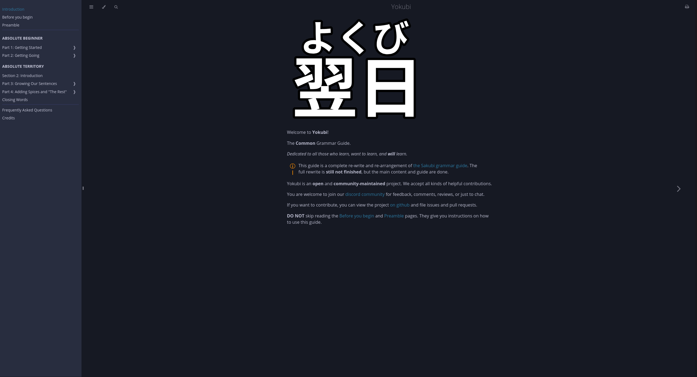

Yoku.bi
Yoku.bi on verkkosivu joka on uudempi versio Sakubi verkkosivusta. Se on myös monelle lähellä sydäntä oleva kieliopin opas, omasta mielestäni Yoku.bi on tällä hetkellä paras verkkosivu kieliopin opiskeluun. Se ei myöskään käy läpi asioita yksityiskohtaisesti mutta se ei ole tarkoituskaan, oppaan tarkoitus on selittää miten asiat toimivat, antaa muutama esimerkkiä ja antaa sinun ymmärtää loput immersiossa. Tämä opas ymmärtää sen miten kieltä opiskellaan ja pohjautuu myös siihen, sen ei ole tarkoitus olla raamattusi vaan se antaa pienen puskun lähteä oikeaan opiskeluun.